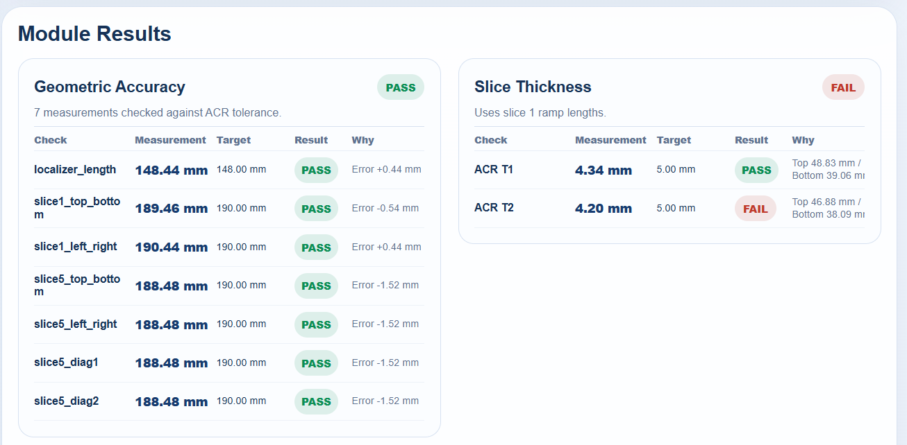
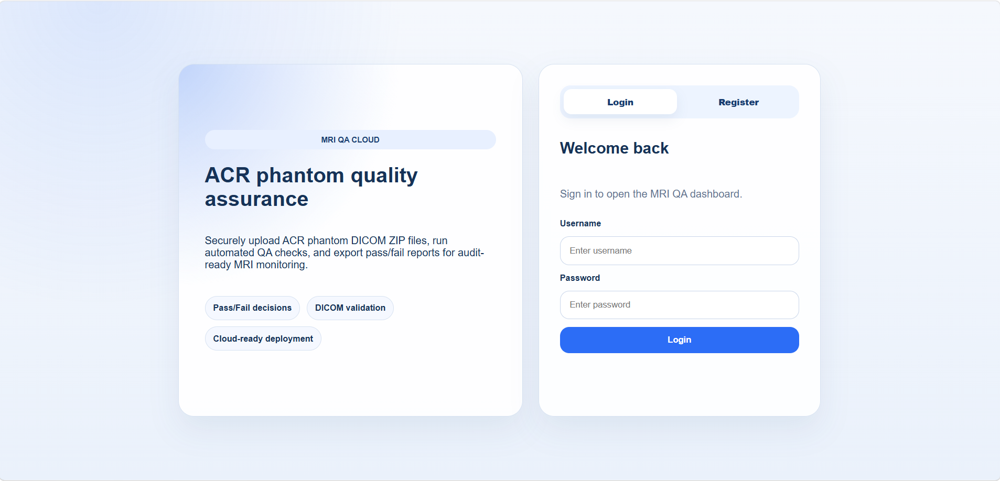
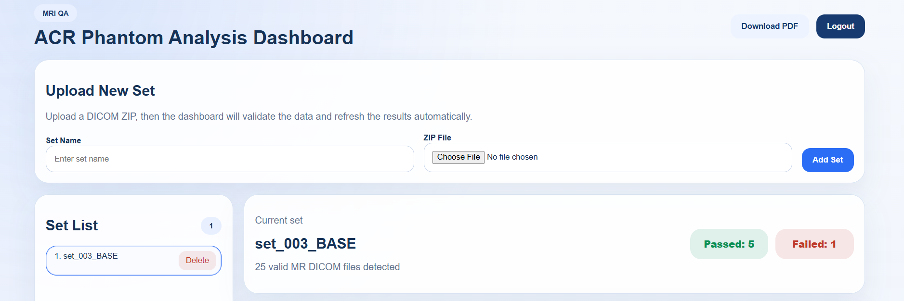
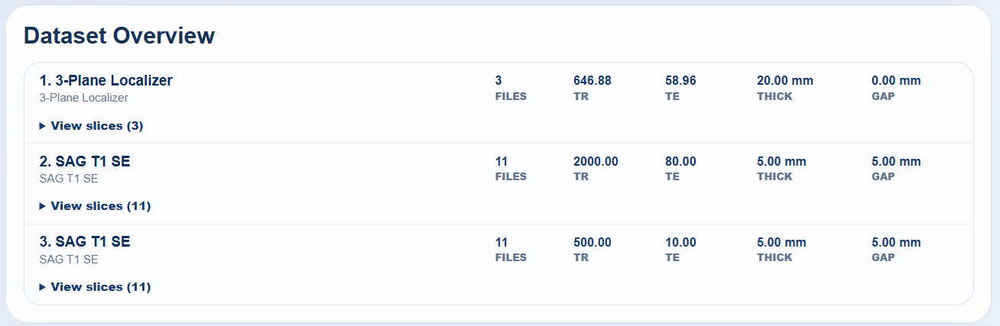
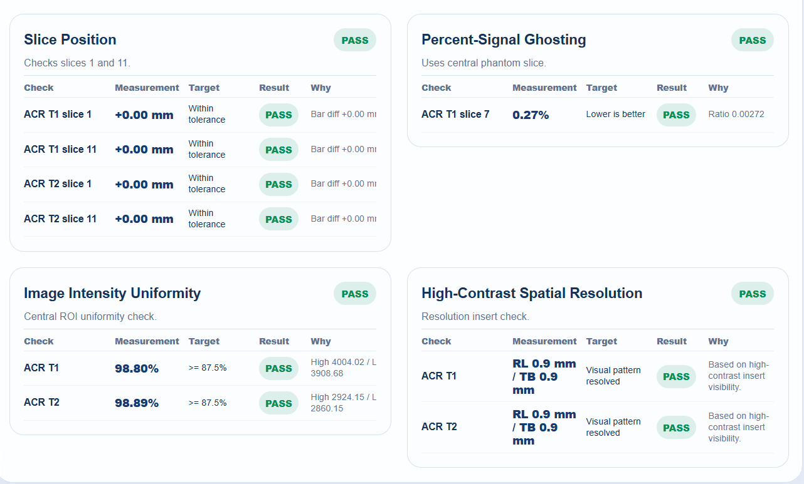
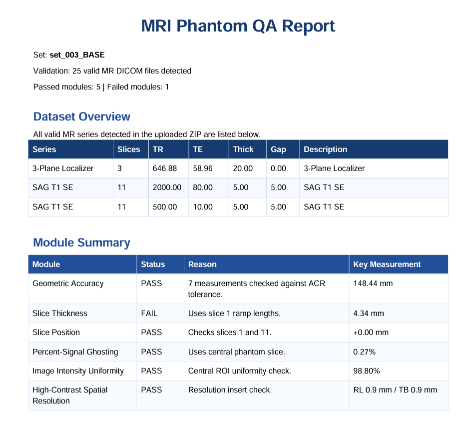

MRI ACR QA Pipeline
A cloud-ready web application that automates MRI scanner quality checks. Users upload a ZIP of MRI DICOM scans, the system validates and groups them, runs six ACR phantom QA tests with clear PASS/FAIL results, and produces a downloadable PDF report. Built by a team of four during a placement — I developed the QA image-processing algorithms and the dashboard pages that present their results.

Why automate MRI quality checks?
MRI scanners must produce accurate images, so hospitals regularly scan a standard test object (an ACR “phantom”) and check measurements such as geometry, slice thickness and image uniformity. These checks are often done by hand, which takes time and can give slightly different answers depending on who does them.
Our goal was a web tool that runs the same calculations the same way every time, shows the results clearly, and keeps a PDF record for review.
From upload to QA report
The full workflow a physicist or technician would follow.

Sign in
Login, registration and logout with Flask sessions. Dashboard routes are protected, so nobody can open them without signing in.

Upload & validate
Upload a ZIP of DICOM scans. The backend extracts it, checks the files are valid MRI images and reports what it found (e.g. “25 valid MR DICOM files detected”).

Group by metadata
Using pydicom, files are automatically sorted into MRI series from their metadata, with slice counts, TR, TE, thickness and gap shown so the user can confirm the upload. Clicking a slice button shows a preview image, so there's no need for a separate DICOM viewer.

Run the QA modules
Six modules measure the images with NumPy, compare each value against ACR tolerances and explain every PASS or FAIL.

Download the report
A PDF report with the dataset overview and a module summary, checked to match exactly what the dashboard shows.
The six QA modules
| Module | What it checks |
|---|---|
| Geometric accuracy | Measured distances in the image match the phantom's real size |
| Slice thickness | Each slice is as thick as the scan settings say |
| Slice position | Slices are where they should be |
| Percent-signal ghosting | No unwanted “ghost” artefacts |
| Image intensity uniformity | Brightness is even across the phantom |
| High-contrast spatial resolution | Fine details are sharp enough to see |
Turning a manual test into code
Two examples of the measurement logic I wrote in Python with NumPy.
Slice thickness
- Find the phantom in the image with an intensity threshold and draw a bounding box around it.
- Crop the region that contains the two bright slice-thickness “ramps”.
- For the top and bottom ramp, average several rows into a smoothed intensity profile and measure how long the ramp is in pixels.
- Convert pixels to millimetres using the DICOM pixel spacing, then apply the ACR formula and compare with the 5 mm target (PASS between 4.3 and 5.7 mm).
top_mm = top_len_px * pixel_spacing_mm
bottom_mm = bottom_len_px * pixel_spacing_mm
thickness = 0.2 * (top_mm * bottom_mm) / (top_mm + bottom_mm)
status = "PASS" if 4.3 <= thickness <= 5.7 else "FAIL"Geometric accuracy
The phantom's length is measured on the sagittal localizer and its diameter is measured in several directions (horizontal, vertical and both diagonals) on axial slices. The code first works out which phantom size was scanned from the measured diameter, then checks every measurement against that phantom's known size (e.g. 148 mm long, 190 mm wide, ±3 mm).
One result format for every module
Every module returns the same structure — module name, measured value, target, PASS/FAIL and a short reason. The dashboard and the PDF report both read this format, so a new module can be added without changing the front-end. The code also saves debug images with the measurement lines drawn on, which made it much easier to check the algorithms visually.
Architecture
QA calculations are kept separate from the dashboard, so each can be tested on its own.
upload, tables, PASS/FAIL
ZIP validation
series grouping
6 ACR checks
Quality & deployment
- 34 pytest tests using Flask's test client: login and sessions, protected routes, upload validation, series classification, analysis output and report links.
- Error cases too: missing file, non-ZIP upload, a ZIP with no real DICOM files, and datasets missing a series (modules return FAIL instead of crashing).
- End-to-end checks with real MRI phantom datasets.
- Packaged with Docker for cloud-ready deployment on AWS. Passwords are hashed and unsafe ZIP structures are rejected.
How the team worked
- Work split by area: algorithms, backend routes, front-end, testing and deployment.
- Git branches and reviewed changes to avoid conflicts in a shared codebase.
- Online team chat plus regular supervisor meetings to plan each stage.
What I worked on
QA algorithms & image processing
- Turned the ACR phantom test procedures into Python modules using pydicom and NumPy — including geometric accuracy and slice thickness, alongside slice position, uniformity, ghosting and resolution.
- Wrote the DICOM handling the modules rely on: reading metadata (TR, TE, pixel spacing, orientation, instance number) and selecting the correct localizer, T1 and T2 series.
- Designed the shared result format (measurement, target, PASS/FAIL, reason) that the dashboard and PDF report use.
Dashboard & integration
- Built and improved the dashboard pages for upload, dataset overview and QA results.
- Connected them to the Flask APIs with
fetch()(/api/upload,/api/sets,/api/analyze), so results load without a page refresh. - Replaced raw JSON with readable result cards, added slice previews, pass/fail counts, and progress and error messages during upload and analysis.
Problems we solved
Measuring the right images
One upload can contain a localizer, a T1 and a T2 series. If the wrong series or slice is used, every measurement is wrong. I used DICOM metadata to classify each series and added a test with mock series to prove the right one is picked.
Bad or incomplete uploads
Uploads were validated early — non-ZIP files, ZIPs without real DICOM data and unsafe ZIP structures are rejected — and a dataset missing a required series returns FAIL results instead of crashing the app.
Making technical results readable
Raw measurement data meant nothing to a user. Showing an overall PASS/FAIL first, then measured vs target values with a short reason, let people spot failed checks at a glance.
What I learned
- Image-processing code needs careful validation — a small mistake in slice selection or pixel spacing changes the final result.
- A correct algorithm is only useful if its result is presented clearly.
- Keeping calculation logic separate from display makes a system easier to test and extend.
Next steps
- Database storage for users, datasets and report history.
- Stronger authentication for real clinical use.
- More QA modules and richer visuals in the PDF report.
Screenshots use ACR phantom test scans only — no patient data. Developed as a team placement project.